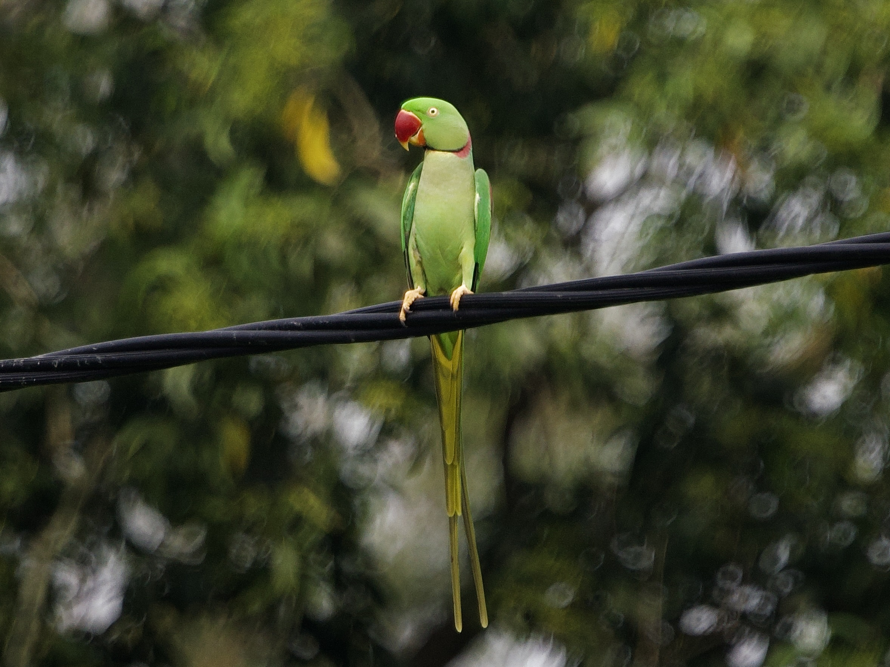
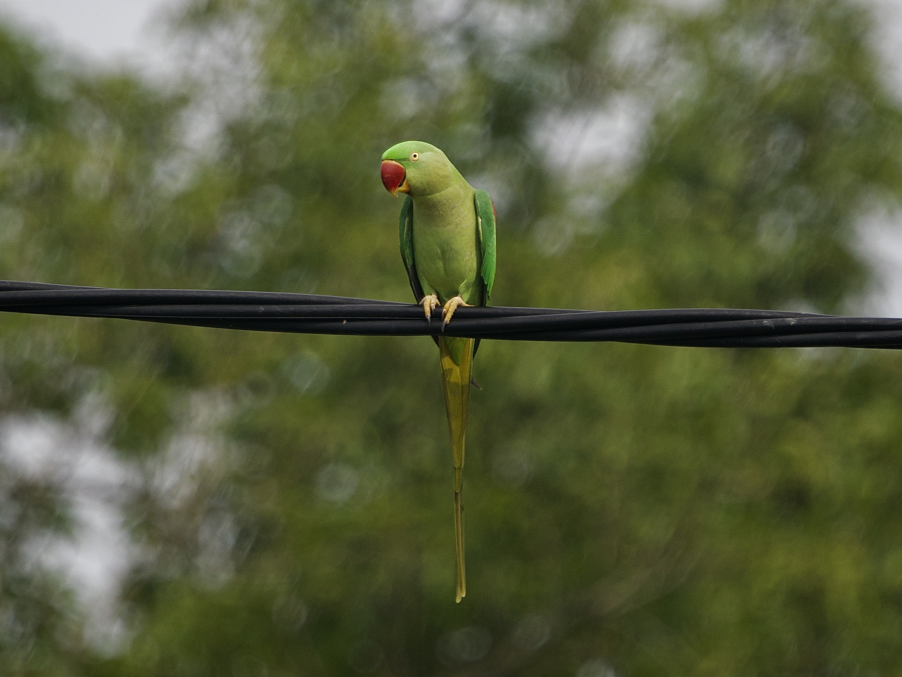

Alexandrine Parakeet
Psittacula eupatria
Order: Psittaciformes
Family: Psittaculidae

A long-tailed green parrot with a big, bright red bill and red wing patch. Male has a black ring lined with red on the neck.

Female lacks the neck patterns. Native to South and Southeast Asia, it is introduced to HK and has established feral populations, notably in Long Valley and Kowloon Park.